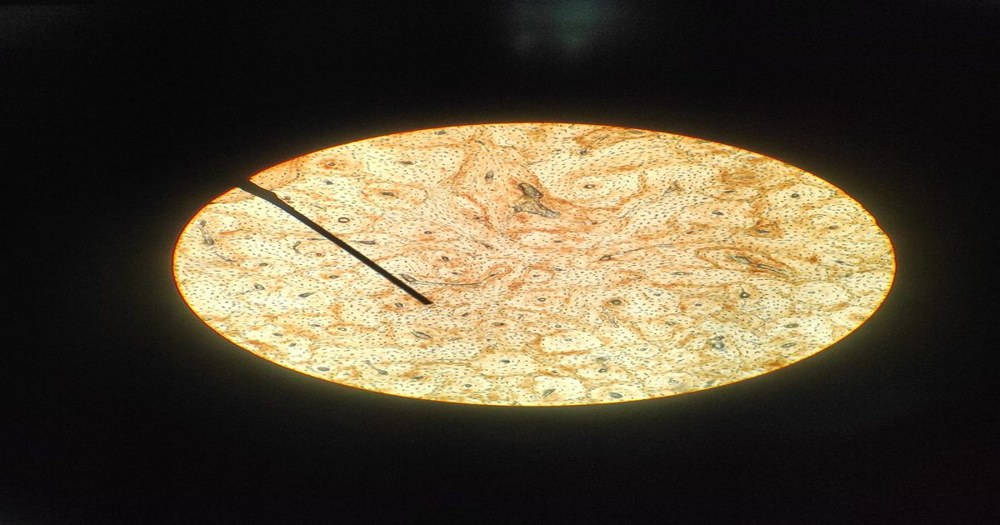

MTR4 уменьшает сосудистое клеточное старение у млекопитающих, продлевает жизнь у червей нематод
Клетки постоянно стареют на протяжении всей жизни, обычно по достижении предела Хейфлика для репликации, но также в ответ на повреждение, высокий уровень клеточного стресса или потенциально раковое повреждение.
Стареющие клетки перестают реплицироваться, увеличиваются в размерах и секретируют провоспалительные сигналы, чтобы привлечь внимание иммунной системы.
В молодости иммунная система быстро очищает стареющие клетки, но это становится менее эффективным с возрастом для